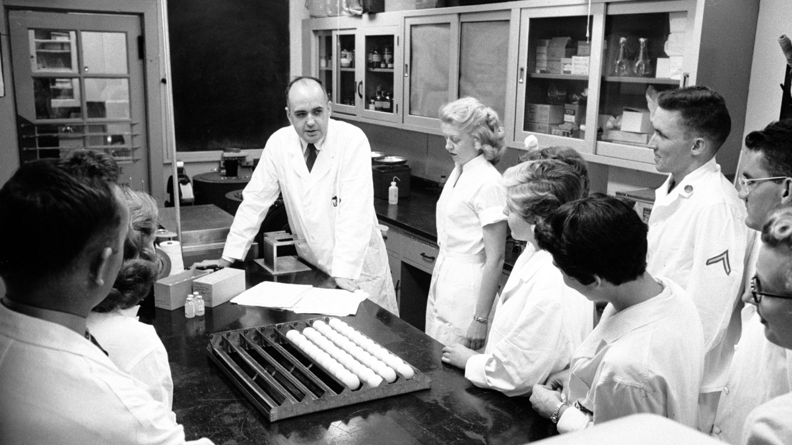

Buluşlarıyla Milyonlarca Hayat Kurtaran Bilim İnsanı

Dr. Maurice Hilleman,
fotoğrafın ortasındaki,
1957 , Maryland , Silver Spring'deki Walter Reed Ordu Araştırma Enstitüsü'ndeki bir
laboratuvarda araştırma ekibiyle virüs hakkında inceleme yaparken.
Maurice Ralph Hilleman'ın hayatının zaman çizelgesi:
Not:Aşağıdaki alanlara mouse ile tıklarsanız sesli metini
dinleyebilirsiniz.Sesli metini durdurmak için iki kere tıklayınız.Eğer sesli metin hala durmadıysa
alanın dışına tıklayınız.
1919 - Hilleman, Montana eyaletinde bulunan, Miles Şehrinin yüksek ova kasabası
yakınlarındaki bir çiftlikte doğdu.
1941 - Parası olmadığı için neredeyse üniversiteye gidemedi. En büyük ağabeyi araya
girdi ve Hilleman, ailesinin desteği ve aldığı burslarla Montana Eyalet Üniversitesi'nden sınıfında
birinci oldu.
1944 - Chicago Üniversitesi'nden burs kazandı ve Üniversite'nin
mikrobiyoloji alanında doktorasını yaptı. Onun doktora tezi, daha sonradan bir virüsün neden olduğu
düşünülen klamidya enfeksiyonları üzerineydi.
Hilleman, bu enfeksiyonların aslında sadece hücrelerin içinde büyüyen bir bakteri türü olan
klamidya enfeksiyonları'nın neden olduğunu gösterdi.
Yıl 1948 den 1957 ye kadar - Ordu Tıp Merkezi'nde (şimdi Walter Reed Ordu Araştırma
Enstitüsü)
Solunum Hastalıkları Bölüm Başkanı olarak,
Hilleman, antijenik kayma ve antijenik sürüklenme olarak bilinen grip virüsü mutasyona uğradığında
meydana gelen genetik değişiklikleri keşfetti.Grip virüsü hakkında onun teorize ettiği şey yıllık
grip aşısının olunması
gerektiğiydi .
Hilleman, Ulusal Sağlık Enstitüleri AIDS Araştırma Programı Değerlendirme Ofisi ve Ulusal
Bağışıklama Programı'nın Bağışıklama Uygulamaları Danışma Komitesi de dahil olmak üzere, akademik,
resmi ve özel çok sayıda ulusal ve uluslararası danışma kurulu ve komitesinde görev yaptı.
1957 - Hilleman, Pennsylvania eyaletinin, West Point'deki yeni virüs ve hücre
biyolojisi araştırma bölümünün başkanı olarak Merck & Co.'ya (Kenilworth, New Jersey) katıldı. Merck
ile birlikte, Hilleman, kredilendirildiği kırk deneysel ve lisanslı hayvan ve insan aşısının çoğunu
geliştirerek hem laboratuar tezgahında hem de bilimsel liderlik sağladı.
Hilleman, 1957'de Hong Kong'da bir grip salgınının büyük bir salgın haline gelebileceğini
ilk fark edenlerden biriydi. Bir önsezi üzerinde çalışırken, 14 saatlik dokuz günün ardından, o ve
bir meslektaşı bunun milyonları öldürebilecek yeni bir grip türü olduğunu keşfetti. Kırk milyon doz
aşı hazırlandı ve dağıtıldı. 69.000 Amerikalı ölmüş olsa da, pandemi Amerika Birleşik Devletleri'nde
çok daha fazla ölümle sonuçlanabilirdi. Hilleman, çalışmaları nedeniyle Amerikan ordusundan Üstün
Hizmet Madalyası ile ödüllendirildi. Aşısının yüz binlerce hayat kurtardığına inanılıyor.
1963 - Kızı Jeryl Lynn, kabakulak hastalığına yakalandı. Ondan materyal elde etti
ve onu kabakulak aşısının temeli olarak kullandı. Kabakulak aşısının Jeryl Lynn türü bugün hala
kullanılmaktadır. Tür şu anda kendisinin de geliştirdiği üç değerlikli (kızamık, kabakulak ve
kızamıkçık) MMR aşısında kullanılmaktadır.Bu aşı, birden fazla canlı virüs türünü içeren şimdiye
kadar onaylanan ilk aşıdır. O dönemin diğer birçok aşısı ve ilacı gibi, aşı da ilk olarak grup
evlerinde yaşayan zihinsel engelli çocuklarda test edildi - bunun nedeni, kötü hijyen ve konaklama
yerlerinin sıkışık alanları göz önüne alındığında, çocukların bulaşıcı hastalığa yakalanma riskinin
çok daha yüksek olmasıydı.
1968 - Hong Kong grip salgını sırasında Hilleman ve ekibi de bir aşı geliştirmede
kilit rol oynadı ve 4 ayda dokuz milyon doz kullanıma sunuldu.
1975 - Hilleman, Amerikan Başarı Akademisi'nin Altın Plaka Ödülü'nü aldı.
1981 - O ve grubu, kan serumunu pepsin, üre ve formaldehit ile tedavi ederek
hepatit B için bir aşı icat etti. Bu, 1981'de lisanslandı, ancak 1986'da Amerika Birleşik
Devletleri'nde, mayadan üretilen bir aşı ile değiştirildiğinde geri çekildi.Bu aşı günümüzde hala
kullanılmaktadır. 2003 yılına kadar 150 ülke bunu kullanıyordu ve Amerika Birleşik Devletleri'nde
genç insanlarda hastalığın görülme sıklığı %95 oranında azalmıştı. Hilleman, bu aşı üzerindeki
çalışmasının en büyük başarısı olduğunu düşündü. Karaciğer nakli öncüsü Thomas Starzl, "...yirminci
yüzyılın insan sağlığına en önemli katkılarından biri olarak hepatit B virüsü belasını kontrol
etmek... Maurice organ nakli alanındaki en önemli engellerden birini ortadan kaldırdı" dedi.
1984 - Hilleman daha sonraki yaşamında Dünya Sağlık Örgütü'nün danışmanıydı.
Zorunlu emeklilik yaşı olan 65'te Merck Araştırma Laboratuvarları kıdemli başkan yardımcısı olarak
emekli oldu. Ardından, önümüzdeki yirmi yıl boyunca çalıştığı yeni oluşturulan Merck Aşılama
Enstitüsü'nü yönetti.
1988 - Başkan Ronald Reagan ona ülkenin en yüksek bilimsel onuru olan Ulusal Bilim
Madalyası'nı takdim etti.
1997 - Dünya Sağlık Örgütü'nden özel yaşam boyu başarı ödülü, Mary Woodard Lasker
Kamu Hizmeti Ödülü ve Sabin Altın Madalya ve Yaşam Boyu Başarı Ödülleri'ni aldı.
2002 - Halk sağlığını aktif olarak geliştirdiği için Tayland Kralı'ndan Prens
Mahidol Ödülü'nü aldı.
11 Nisan 2005 - 85 yaşında hayatını kaybetmeden önce Hilleman,
Philadelphia'daki Pennsylvania Üniversitesi'nde Yardımcı Pediatri Profesörüydü.
"Her zaman ölümü aldatmış gibi hissettim" --Maurice Ralph Hilleman
Vaktiniz varsa, bu inanılmaz insan hakkında Wikipedia Girişinde daha
fazlasını okumalısınız.